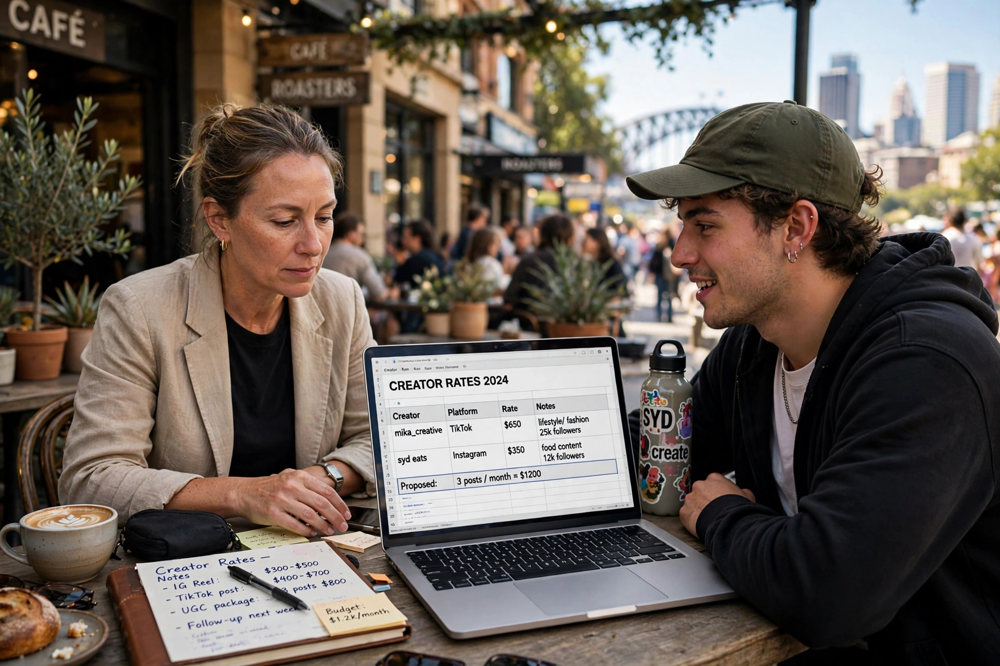

Nano creator cost Australia
How much do nano creators cost in Australia?
The short answer: an Australian nano creator typically charges $100–$400 for a sponsored post — far less than a micro creator. The longer answer depends on what you count: the post, the platform, or the whole month.
LocalCreators team · 27 November 2026 · 5 min read

Nano vs micro: the rate gap
A nano creator has 1,000 to 10,000 followers; a micro creator is the next tier up, and charges accordingly. The Australia Experiences benchmark from August 2026 puts Australian nano creator rates at $100–$400 per post, and micro creator rates at $300–$3,000 per post — even the most expensive nano post costs less than the middle of the micro range.
A large study tells the same story. A Virev 2026 study of 391,731 Instagram creators found a median sponsored post cost of $110 for a nano creator, versus $636 for a micro creator. Medians matter here, because a few very expensive creators can drag an average up. The median is the middle creator — the typical price you would actually be quoted.
What pushes a nano creator to the top of the range?
Not every nano creator charges the same. Four things push a quote towards $400 rather than $100:
- Engagement. Nano creators have a median engagement rate of 2.1%, versus 0.5% for mega creators, according to the same Virev 2026 study. A creator whose followers actually comment, save, and share can charge more than one whose audience scrolls past.
- Format. A polished Reel with editing takes longer than a quick Story, and costs more. A bundle of one Reel plus one Story is a common package.
- Niche. A food creator with a loyal local following, or a beauty creator whose recommendations drive bookings, is worth more to a business in that niche than a general lifestyle creator.
- Usage. If you want to reuse the creator's content in your own ads, or keep it on your channels beyond the original post, expect to pay extra. Agree on usage in writing before the post goes live.
The hidden cost: the platform fee
The creator's fee is only half the cost if you hire through a platform. Some platforms charge a monthly subscription before any creator is paid. Posted charges $500 a month, with a $5,000 contest minimum, according to its help centre in October 2026. TRIBE, founded in Melbourne and home to more than 70,000 creators, does not publish prices — brands get a custom quote. For a small business, a custom quote usually means enterprise pricing, not a flat monthly fee you can plan around.
Local, lower-priced options exist. Eros charges A$99 a month on a 12-month plan for Sydney venues. Apfluencer charges $199–$599 a month across five cities. When you compare options, always add the subscription to the creator fees: a $110 creator on a $500-a-month platform is not a $110 campaign.
What a bundle costs instead
| Option | What you pay | What you get |
|---|---|---|
| One nano creator, direct | $100–$400 per post | One post, one audience |
| One micro creator, direct | $300–$3,000 per post | One post, larger audience |
| LocalCreators Starter | $79/month | 5 nano creators a month |
| LocalCreators Growth | $99/month | 10 nano creators a month |
| LocalCreators pay as you go | $149 one-off | One 10-creator bundle |
Creator rates: Australia Experiences benchmark, August 2026. LocalCreators prices in AUD including GST; creators keep 85–90% of what you pay.
That comparison is the point of a bundle. Hiring ten nano creators one by one at the typical rates above would cost $1,000 or more for a single round of posts. A Growth bundle buys ten creators for $99 a month, with suburb-level matching and automatic disclosure compliance included. The per-creator cost is lower because the work is bundled — one brief, ten creators, one price. See the full breakdown on our pricing page.
What good value looks like
Cheap is not the same as good value. A $100 post that nobody sees is wasted money; a $400 post that books ten tables is a bargain. Before you judge a price, decide what you are measuring: profile visits, saves, bookings, or walk-ins — and pick creators whose followers live near you.
That is why a bundle beats a single post. Ten creators in the same suburb, posting in the same week, give you ten chances for the right person to see your business — and a clearer picture of which creators bring customers in. Rebook the ones who work, and your cost per booking falls every month.
How to budget for your first month
For a first campaign, budget for the bundle plus the cost of hosting the creators — the meals, treatments, or products they will feature. Agree the brief, the format, and the approval step in writing, and check that every paid post carries a clear #ad or Paid Partnership tag. In March 2026 the ACCC fined PhotobookShop $39,600 for influencer disclosure failures, so build disclosure into the process from the start.
If you want the wider context, read our small-business guide to nano influencer marketing in Australia, or our guide to finding UGC creators in Sydney without an agency. Or see how LocalCreators works and join the waitlist to reserve your suburb.